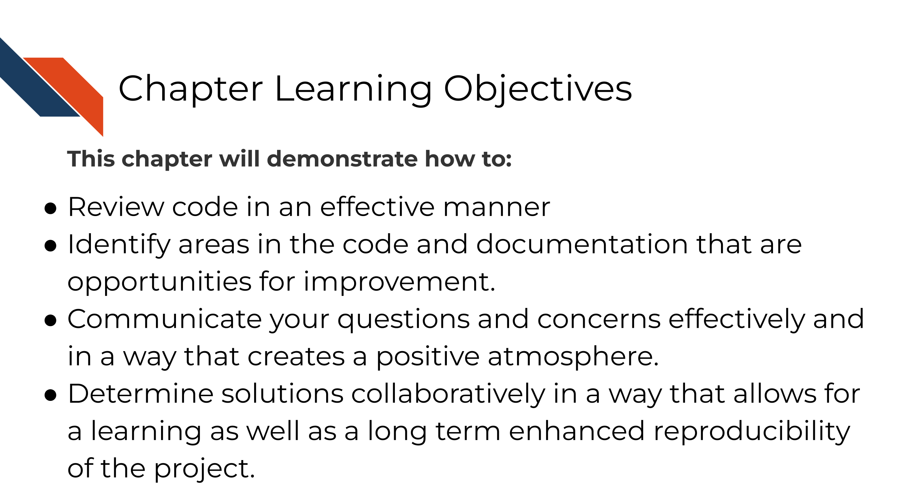
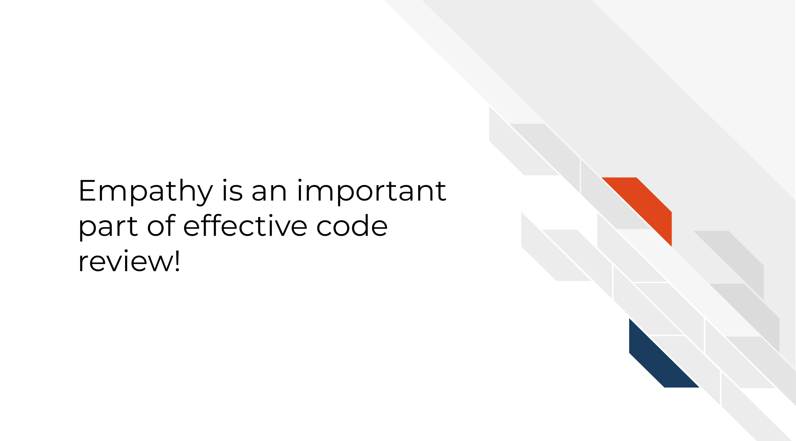

Chapter 13 Conducting code review as a reviewer on GitHub
13.1 Prerequisites
- Have an understanding of why Github is useful
- Have a GitHub account
- Create a repository on Github
- Set up a Git Client
- Know how to make a pull request - Beginner method or Advanced method
13.2 Learning Objectives

13.3 Reviewer responsibilities in code review
When reviewing a pull request, you take on responsibility to ensure that the pull request is getting the project to a better state than before.
There are three aspects to reviewing we will focus on:
- Identify areas in the code and documentation that are opportunities for improvement.
- Communicate your questions and concerns effectively and in a way that creates a positive atmosphere.
- Determine solutions collaboratively in a way that allows for a learning as well as a long term improved product.
13.3.1 What to look for!
Depending on the goals of the project, and pull request there can be a lot to keep an eye out for. There are many articles out there about what to look for in a code review.
Here’s some general points:
- Does the analysis answer the question it’s asking? Are the methods it uses to do so appropriate?
- Is the code clear and readable? Does it contain a healthy amount of comments and documentation for individuals not familiar with the project to understand generally what is going on?
- Is the code efficient with computational resources? (Are there areas it’s a bit too greedy with memory usage?)
- Does the code stick to the style and conventions of this project?
- Are there alternate scenarios where the current strategy might fail? (depending on the likelihood of this use case, this may be an instance for a new issue and for it to be addressed in a different pull request).
13.3.2 How to communicate it
The pull request may be the author’s precious bundle. Try to be empathetic to the learning process! You are both working on this project together – assume you both want the best out of this project. If something seems wrong, work together to find a solution, don’t ever waste time on placing blame.

Remember that everything sounds harsher when you don’t have in-person cues! In this example, Avi may be stating factual things, but without his pleasant and reassuring disposition, it can feel super harsh.

If Avi had reframed his comments, they might be more effective in this collaboration. Babatunde (2018) suggests framing review comments in three ways to help communication: questions, suggestions, and appreciations.
13.3.2.1 Questions
For example:
What happens if this doesn’t get saved? Does it throw an exception or fails silently?
The key is to be specific with the questions. Mention exact file names. Put comments on the line you are referring to. Explain what you think is happening and ask them to explain if that is correct.
13.3.2.2 Suggestions
For example:
I suggest you use an ArrayHelper getValue method here because of its error handling capability instead of accessing the value directly You could even go further by giving an example: $a = $b[‘key’]; would raise an error if key is not set but \(a = ArrayHelper::getValue(\)b, ‘key’); would return a null value if key is not set.
Giving suggestions and explain not only how to implement it but why it might be preferred in this scenario is a great learning process both for the author and yourself.
13.3.2.3 Appreciations
Start every review comment with an appreciation for the hard work completed! This goes a long way for creating a positive atmosphere.
For example:
Nice Job! Alice. I suggest we create an interface for this service so other substitute services can implement the interface as well, this would enable us change to a different service with very minimal efforts when the need arises. What do you think?
Let’s see how Avi’s message could have been reworked to give a more effective review:
![Ruby has requested a review from Avi but alternatively, Avi has framed his review in a more effective manner, giving context, examples, and creating a much more positive collaboration. Avi’s review says: Ruby, thanks for all this work! This is a great start! I have a few questions so we can further polish this code. Is your usage of the formattR package because of the weird formatting of the data.tsv file? Perhaps we can brainstorm another approach to this that would allow us to get rid of this package requirement. I think that in your last chunk you may have forgotten to style the code according to the conventions for this repository. Perhaps we can discuss how we introduce something to help all authors of this repository adhere to the conventions. This may be an instance we can use automation or a checklist to help. Ruby happily accepts this review and the collaboration will create a better product.](resources/images/13-code-review-reviewer_files/figure-html/1IJ_uFxJud7OdIAr6p8ZOzvYs-SGDqa7g4cUHtUld03I_gfa97af8537_0_55.png "Ruby has requested a review from Avi but alternatively, Avi has framed his review in a more effective manner, giving context, examples, and creating a much more positive collaboration. Avi’s review says: Ruby, thanks for all this work! This is a great start! I have a few questions so we can further polish this code. Is your usage of the formattR package because of the weird formatting of the data.tsv file? Perhaps we can brainstorm another approach to this that would allow us to get rid of this package requirement. I think that in your last chunk you may have forgotten to style the code according to the conventions for this repository. Perhaps we can discuss how we introduce something to help all authors of this repository adhere to the conventions. This may be an instance we can use automation or a checklist to help. Ruby happily accepts this review and the collaboration will create a better product.")
This interaction reminds us that effective code review is steeped in empathy from both sides. Authors need to appreciate the time and effort the reviewer is spending to help them; while reviewers need to be sensitive to the amount of effort put in by the author already.

13.3.3 Exercise: Review Past you’s code
- Find the oldest code you wrote and currently have on your computer.
- Create a repository and pull request with this old code, following the general steps for creating a repository and pull request from the previous chapter.
- Request yourself as a reviewer.
- Review the code on Github using their docs as a guide for the mechanics of it.
- As you review, have empathy for past yourself, and give questions, appreciations, and suggestions in regards to this code.
13.3.3.1 Recommended reading about code review
- Comments during Code Reviews by Babatunde (2018)
- On Empathy and Pull Requests by Duretti Hirpa (2016).
- Code Review Guidelines for Humans by Hauer (2018).
- Your Code Sucks! – Code Review Best Practices by Hildebr (2020).
- An even longer list of readings about code review
If you have any feedback on this chapter, please fill out this form, we’d love to hear your feedback!